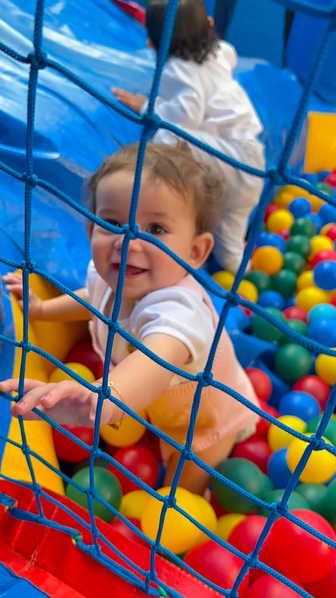

Baby Class
Baby Class
Berçário
Um ambiente seguro e acolhedor para vínculos afetivos, descobertas sensoriais e estímulos adequados ao desenvolvimento motor, cognitivo, emocional e da linguagem.
Conheça esta fase